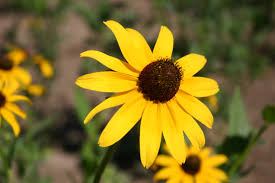
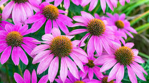
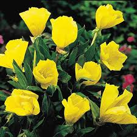
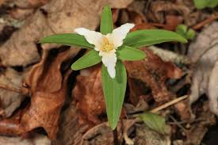
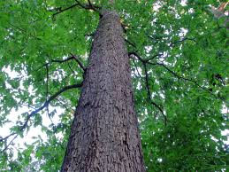
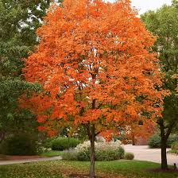
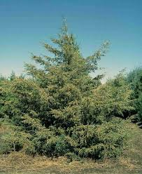
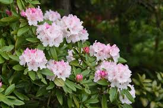
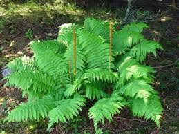

Black-eyed Susan
Black-eyed Susans are vibrant wildflowers with bright golden-yellow petals and dark brown centers. These cheerful flowers bloom from summer through fall and attract butterflies and bees. They are extremely hardy and require minimal water, making them popular in native gardens. The flowers can reach up to 3 feet tall and brighten any landscape with their sunny appearance.
Found throughout the Ozarks in open prairies, meadows, and along roadsides. They thrive in sunny areas with well-drained soil and are especially common in the Springfield Plateau region.

Purple Coneflower
Purple coneflowers (Echinacea) are native wildflowers with distinctive purple-pink petals and prominent orange-brown cone-shaped centers. These flowers bloom from mid-summer through early fall and are known for their medicinal properties. They are extremely attractive to butterflies, bees, and other pollinators. The entire plant can be used for herbal preparations.
Found throughout the Ozarks in prairies, dry meadows, and open woodland areas. They prefer full sun and well-drained soil, particularly common in the Boston Mountains region.

Ozark Sundrops
Ozark sundrops are endemic wildflowers found only in the Ozarks region. These delicate flowers have pale yellow petals and bloom in late spring to early summer. They are adapted to the unique limestone glade habitat and sandy soils of the Ozarks. Their presence indicates the ecological uniqueness and biodiversity of the Ozark ecosystem.
Found exclusively in specialized glade habitats throughout the Ozarks. These areas are typically on hilltops with thin, rocky soils and sparse vegetation, particularly in Missouri and Arkansas.

Red Trillium
Red trilliums are shade-loving wildflowers with three deep red petals and three green sepals. These delicate flowers bloom in early spring in moist, shaded woodlands. The entire plant has a distinctive triangular shape with three leaves, three petals, and three sepals. They are an indicator of healthy, undisturbed forest ecosystems.
Found in moist, shaded deciduous forests throughout the Ozarks, particularly in river bottomlands and protected coves. They prefer rich, organic soils and bloom early in the spring before tree canopy closes.

White Oak
White oaks are majestic hardwood trees that can live for hundreds of years and reach heights of 50-80 feet. These trees have distinctive rounded leaf lobes and produce abundant acorns that are important food sources for wildlife. White oak wood is valuable for lumber and firewood. Their deep root systems help prevent erosion and they provide excellent habitat for countless species.
Found throughout the Ozarks in mixed oak-hickory forests and on hillsides. They thrive in well-drained soils and are a dominant species in the Ozark forest ecosystem.

Sugar Maple
Sugar maples are valuable hardwood trees known for producing maple syrup and displaying brilliant fall foliage. These trees can reach heights of 60-75 feet and live for 200+ years. In autumn, their leaves turn spectacular shades of red, orange, and yellow. Sugar maples support numerous insects and animals, and their sap has been harvested by humans for centuries.
Found primarily in the northern Ozarks in cool, moist coves and north-facing slopes. They prefer rich soils and are particularly abundant in the upper elevation areas of the Boston Mountains.

Eastern Redcedar
Eastern redcedars (actually a type of juniper) are evergreen trees with fragrant wood and distinctive blue-gray berries. These resilient trees can grow in poor soils and harsh conditions, making them pioneers in disturbed areas. The wood is used for closets and chests due to its aromatic properties. Redcedars provide year-round habitat and food for wildlife.
Found throughout the Ozarks on rocky hillsides, glades, and limestone areas. They are particularly common on south-facing slopes and in areas with limestone soils.

Ozark Rhododendron
Ozark rhododendrons are native shrubs that create spectacular displays of pink-purple flowers in spring. These evergreen plants can form dense thickets in rocky woodland areas. They typically grow 4-6 feet tall and bloom in April and May. Ozark rhododendrons are endemic to the Ozarks and are an important indicator of native Ozark forest communities.
Found throughout the Ozarks in rocky, acidic soils on hillsides and near streams. They are particularly abundant in protected coves and along river valleys in northern Arkansas and southern Missouri.

Cinnamon Fern
Cinnamon ferns are deciduous ferns with distinctive cinnamon-colored fertile fronds that stand upright among the sterile green fronds. These ferns can grow quite large, reaching 3-5 feet in height. They prefer moist to wet habitats and form substantial colonies in suitable areas. Cinnamon ferns are fascinating examples of ancient plant reproduction through spores.
Found in moist to wet areas throughout the Ozarks including swamps, seep areas, and wet bottomland forests. They require high moisture levels and acidic soils.

Christmas Fern
Christmas ferns are evergreen ferns that remain green throughout the winter, making them distinctive in the forest landscape. These hardy ferns grow 12-24 inches tall and have dark green, leathery fronds. They are commonly used in holiday decorations, though sustainable harvesting practices are important. Christmas ferns are resilient and thrive in rocky woodland areas with shade.
Found throughout the Ozarks on rocky hillsides and woodlands with dappled shade. They prefer well-drained soil with plenty of organic matter and are especially common on north-facing slopes.

Partridge Berry
Partridge berry is a low-growing groundcover with small, paired leaves and delicate white flowers in summer. In fall, it produces bright red berries that persist through winter and are an important food source for wildlife. This evergreen groundcover typically grows only 2-4 inches tall but can spread across the forest floor. Partridge berries are sacred in some Native American traditions.
Found in moist, shaded woodlands throughout the Ozarks, particularly in areas with acidic, well-drained soils rich in organic matter. Common in the understory of oak and hickory forests.

Fragrant Sumac
Fragrant sumac is a low-growing shrub, typically 2-4 feet tall, with aromatic leaves that emit a pleasant lemon scent when brushed. This native shrub produces small yellow flowers in spring and red berries in fall that attract birds and wildlife. Despite its similarity to poison ivy, fragrant sumac is harmless. The berries persist through winter and are an important food source for wildlife.
Found throughout the Ozarks on rocky hillsides, glades, and dry areas with limestone soils. Common on south-facing slopes and disturbed areas where it helps stabilize soil.

Pawpaw
Pawpaw is a native understory shrub known for producing tropical-tasting fruits that are among the largest fruits native to North America. The green fruits ripen to yellow in fall and have a custard-like flavor. Pawpaw leaves are large and distinctive, and the plant grows 15-30 feet tall in suitable conditions. Pawpaw fruit attracts bears, raccoons, and other wildlife.
Found in moist, shaded areas along streams and river bottomlands throughout the Ozarks. They prefer rich soils and dappled shade in protected coves and sheltered valleys.

Spicebush
Spicebush is a fragrant deciduous shrub with aromatic leaves, stems, and berries that smell like lemon when crushed. This native shrub grows 6-12 feet tall and produces small clusters of yellow flowers in early spring before leaves emerge. The red berries ripen in fall and are a favored food of spicebush swallowtail caterpillars. All parts of the plant are edible and have been used traditionally in teas and seasonings.
Found in moist, shaded habitats throughout the Ozarks, particularly near streams, springs, and seep areas. They prefer rich soils and are common in river bottomlands and protected coves.